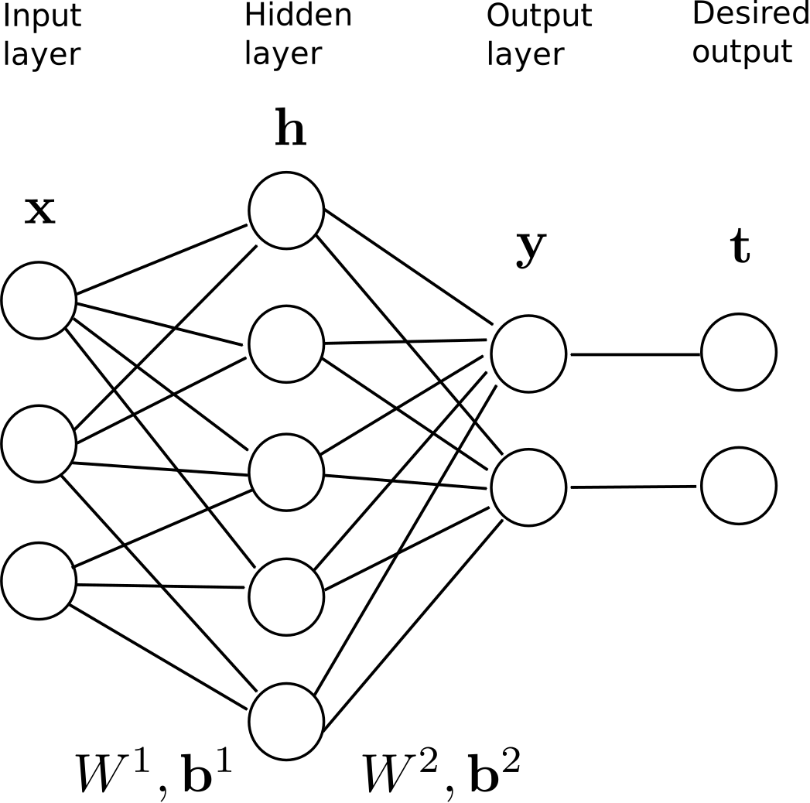
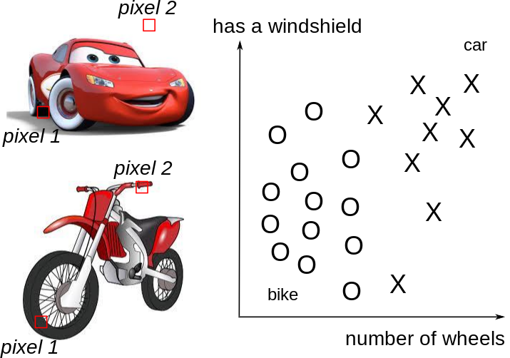
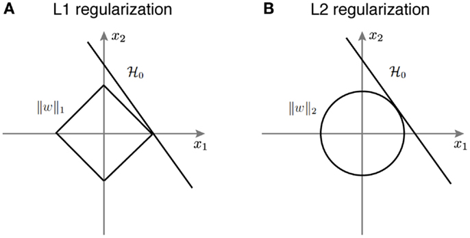

Professur für Künstliche Intelligenz - Fakultät für Informatik
Shallow vs. deep networks

Universal approximation theorem (Cybenko, 1989): a shallow network can approximate any mapping function between inputs and outputs.
If the mapping function is too complex, a shallow network may need too many hidden neurons.
The hidden neurons extract features in the input space: typical characteristics of the input which, when combined by the output neurons, allow to solve the classification task.
Problem: the features are not hierarchically organized and cannot become complex enough.
Feature selection
Shallow networks can not work directly with raw images: noise, translation, rotation, scaling…
One needs first to extract complex and useful features from the input images in order to classify them correctly.
Feature selection
Shallow networks can not work directly with raw images: noise, translation, rotation, scaling…
One needs first to extract complex and useful features from the input images in order to classify them correctly.
Feature selection

Shallow networks can not work directly with raw images: noise, translation, rotation, scaling…
One needs first to extract complex and useful features from the input images in order to classify them correctly.
Deep Neural Network
A MLP with more than one hidden layer is a deep neural network.
The different layers extract increasingly complex features.
Problems with deep networks
In practice, training a deep network is not as easy as the theory would suggest.
Four main problems have to be solved:
Bad convergence: the loss function has many local minima.
Momentum, adaptive optimizers, annealing…
Long training time: deep networks use gradient descent-like optimizers, an iterative method whose speed depends on initialization.
Normalized initialization, batch normalization…
Overfitting: deep networks have a lot of free parameters, so they tend to learn by heart the training set.
Regularisation, dropout, data augmentation, early-stopping…
Vanishing gradient: the first layers may not receive sufficient gradients early in training.
The loss function \mathcal{L}(\theta) of a deep neural network has usually not a single global minimum, but many local minima: irregular loss landscape.
Gradient descent gets stuck in local minima by design.
One could perform different weight initializations, in order to find per chance an initial position close enough from the global minimum. \rightarrowinefficient.
Stochastic gradient descent
What we actually want to minimize is the mathematical expectation of the square error (or any other loss) on the distribution of the data.
This sampled loss has a high variance: take another minibatch and the gradient of the loss function will likely be very different.
If the batch size is big enough, the estimated gradient is wrong, but usable on average (unbiased).
The high variance of the estimated gradient helps getting out of local minimum: because our estimation of the gradient is often wrong, we get out of the local minima although we should have stayed in it.
The true gradient is 0 for a local minimum, but its sampled value may not, so the parameters will be updated and hopefully get out of the local minimum.
Which batch size works the best for my data? Cross-validation, but beware that big batch sizes increase memory consumption, what can be a problem on GPUs.
Parameter-dependent optimization
Another issue with stochastic gradient descent is that it uses the same learning rate for all parameters. In ravines (which are common around minima), some parameters (or directions) have a higher influence on the loss function than others.
In the example above, you may want to go faster in the “horizontal” direction than in the “vertical” one, although the gradient is very small in the horizontal direction.
With a fixed high learning rate for all parameters, SGD would start oscillating for the steep parameters, while being still very slow for the flat ones.
The high variance of the sampled gradient is detrimental to performance as it can lead to oscillations.
Most modern optimizers have a parameter-dependent adaptive learning rate.
SGD with momentum
One solution is to smooth the gradients over time (i.e. between minibatches), in order to avoid that one parameter is increased by one minibatch and decreased by the next one.
The momentum method uses a moving average of the gradient (momentum step) to update the parameters:
0 \leq \alpha < 1 controls how much of the gradient we use for the parameter update (usually around 0.9)
\alpha=0 is the vanilla SGD.
SGD with momentum
When the gradient for a single parameter has always the same direction between successive examples, gradient descent accelerates (bigger steps).
When its sign changes, the weight changes continue in the same direction for while, allowing to “jump” over small local minima if the speed is sufficient.
If the gradient keeps being in the opposite direction, the weight changes will finally reverse their direction.
SGD with momentum uses an adaptive learning rate: the learning is implictly higher when the gradient does not reverse its sign (the estimate “accelerates”).
SGD with momentum
With momentum, the flat parameters keep increasing their update speed, while the steep ones slow down.
SGD with momentum gets rid of oscillations at higher learning rates.
The momentum method benefits a lot from the variance of SGD: noisy gradients are used to escape local minima but are averaged around the global minimum.
Finding the optimal value for the hyperparameters (or metaparameters) of the network is not easy:
learning rate \eta, momentum \alpha, etc.
For example, choosing \eta too small leads to very slow learning. Choosing it too big can lead to oscillations and prevent convergence.
A better strategy is to start with a big learning rate to “roughly” find the position of the global minimum and progressively decrease its value for a better convergence:
\eta \leftarrow (1 - \beta) \, \eta
The decrease can be applied after each epoch. \beta is called the decay rate, usually very small (10^{-6}).
The method is called annealing or scheduling.
Finding a good range for the learning rate
A simple trick to find a good estimate of the learning rate (or its start/stop value) is to increase its value exponentially for each minibatch at the beginning of learning.
The “good” region for the learning rate is the one where the validation loss decreases, but does not oscillate.
Even with annealing, it is tricky to find the optimal value of the hyperparameters.
The only option is to perform cross-validation, by varying the hyperparameters systematically and initializing the weights randomly every time.
There are two basic methods:
Grid search: different values of each parameter are chosen linearly ([0.1, 0.2, \ldots, 0.9]) or logarithmically ([10^{-6}, 10^{-5}, \ldots, 10^{-1}]).
Random search: the value are randomly chosen each time from some distribution (uniform, normal, lognormal).
The advantage of random search is that you can stop it anytime if you can not wait any longer.
Very time-consuming, but easy to perform in parallel if you have clusters of CPUs or GPUs (data-parallel).
Bayesian hyperparameter optimization
A more advanced and efficient technique is Bayesian hyperparameter optimization, for example the Tree Parzen Estimator (TPE) algorithm.
The idea is to build a probability model of the objective function and use it to select the most promising hyperparameters to evaluate in the true objective function.
Roughly speaking, it focuses parameter sampling on the interesting regions.
If the data is not centered in the input space, the hyperplane (i.e. each neuron) may need a lot of iterations to “move” to the correct position using gradient descent. The initialization of the weights will matter a lot: if you start too far away from the solution, you will need many iterations.
If the data is normalized (zero mean, unit variance), the bias can be initialized to 0 and will converge much faster. Only the direction of the weight vector matters, not its norm, so it will be able to classify the data much faster.
Whitening goes one step further by first decorrelating the input dimensions (using Principal Component Analysis - PCA) and then scaling them so that the data lies in the unit sphere.
Better method than simple data normalization, but computationally expensive.
When predicting on new data, do not forget to normalize/whiten them too!
Batch normalization (BN)
A single layer can learn very fast if its inputs are normalized with zero mean and unit variance.
This is easy to do for the first layer, as one only need to preprocess the inputs \mathbf{x}, but not the others.
The outputs of the first layer are not normalized anymore, so learning in the second layer will be slow.
Batch normalization (BN)
Batch normalization allows each layer to normalize its inputs on a single minibatch:
It leads to very sparse representations: a lot of neurons will be inactive, and only a few will represent the input.

Dropout
Randomly dropping (inactivating) some neurons with a probabilityp between two input presentations reduces the number of free parameters available for each learning phase.
Multiple smaller networks (smaller VC dimension) are in fact learned in parallel on different data, but they share some parameters.
This method forces the network to generalize. It is a form of regularization (mathematically equivalent to L2), now preferred in deep networks. p is usually around 0.5.
Dropout
Each new input \mathbf{x} (or minibatch of inputs) is learned by a different neural network.
But on average, the big neural network has learned the whole dataset without overfitting.
The best way to avoid overfitting is to use more data (with variability), but this is not always possible.
A simple trick to have more data is data augmentation, i.e. modifying the inputs while keeping the output constant.
For object recognition, it consists of applying various affine transformations (translation, rotation, scaling) on each input image, while keeping the label constant.
Allows virtually infinite training sets.
Validation set and Early-Stopping
Early-stopping fights overfitting by monitoring the model’s performance on a validation set.
A validation set is a set of examples that we never use for gradient descent, but which is also not a part of the test set.
If the model’s performance ceases to improve sufficiently on the validation set, or even degrades with further optimization, we can either stop learning or modify some meta-parameters (learning rate, momentum, regularization…).
The validation loss is usually lower than the training loss at the beginning of learning (underfitting), but becomes higher when the network overfits.
4 - Vanishing gradient
Vanishing Gradient problem
Contrary to what we could think, adding more layers to a DNN does not necessarily lead to a better performance, both on the training and test set.
Here is the performance of neural networks with 20 or 56 layers on CIFAR-10:
If |W_\text{max}| < 1, then (W_\text{max})^d is very small for high values of d : the gradient vanishes.
If |W_\text{min}| > 1, then (W_\text{min})^d is very high for high values of d : the gradient explodes.
Exploding gradients can be solved by gradient clipping, i.e. normalizing the backpropagated gradient if its norm exceeds a threshold (only its direction actually matters).